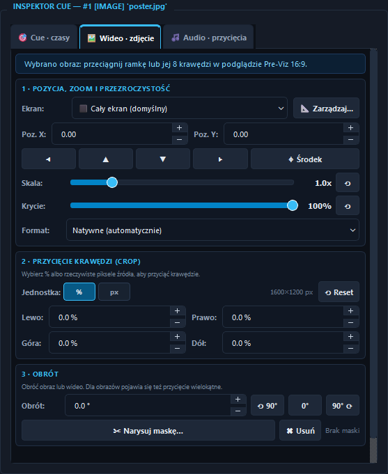
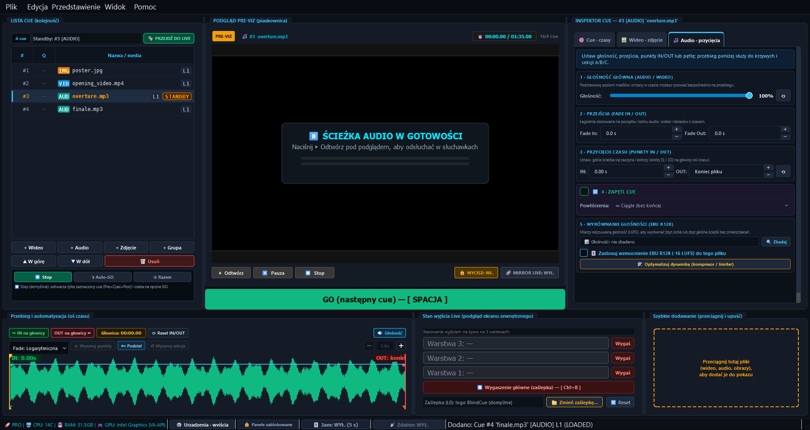
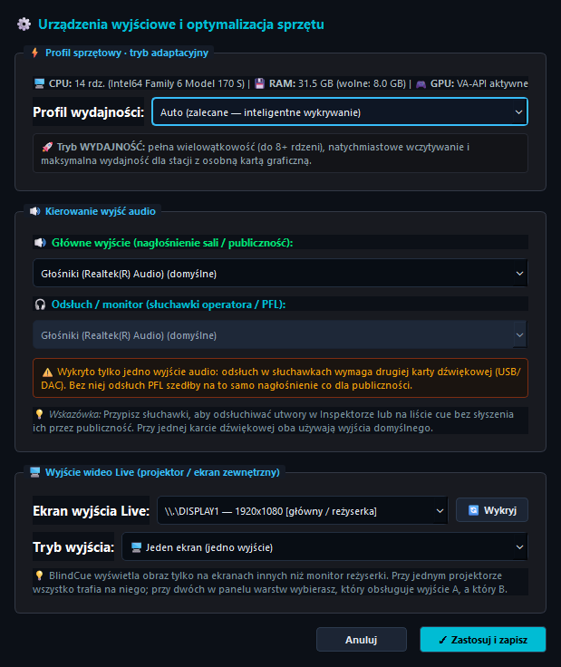
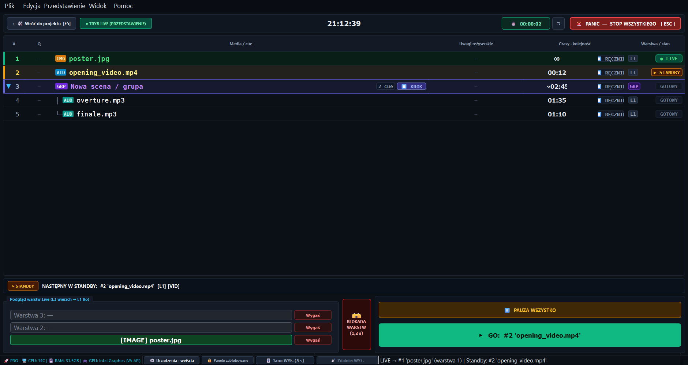
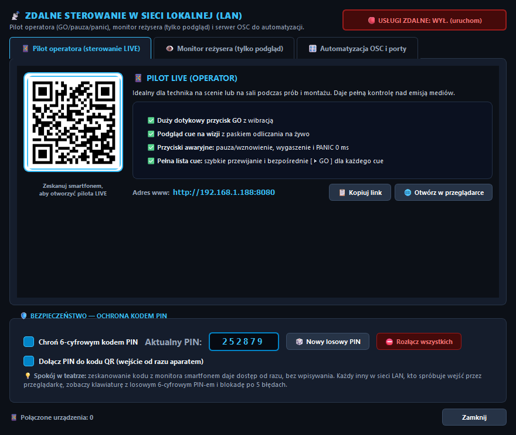

BlindCUE – instrukcja obsługi
BlindCUE to program do prowadzenia przedstawień: z jednego ekranu odpalasz
kolejno muzykę, filmy i zdjęcia, a widownia widzi obraz na projektorze.
Ta instrukcja prowadzi od pustego programu do gotowego przedstawienia.
Spis treści
- Ekran programu – co gdzie jest
- Nowe przedstawienie i zapisywanie
- Dodawanie wideo, audio i zdjęć
- Ustawianie cue (Inspektor)
- Przejścia, efekty i obraz
- Dźwięk: głośność, przycięcie, pętla, wyrównanie
- Grupy i sceny
- Warstwy L1–L3 i zaślepka L0
- Projektor i okno wyjścia
- Prowadzenie przedstawienia (tryb LIVE)
- Sytuacje awaryjne
- Dodatki: pilot w telefonie, mapping, ustawienia
- Skróty klawiszowe
- Dobre praktyki przed przedstawieniem
1. Ekran programu – co gdzie jest

- Lista cue (lewa kolumna) – kolejność przedstawienia. Każdy wiersz to jeden
cue (punkt): film
VID, dźwięk AUD, obraz IMG albo
grupa GRP. Pod listą są przyciski
+ Wideo / + Audio / + Zdjęcie / + Grupa,
przesuwanie W górę / W dół i Usuń.
- Podgląd Pre-Viz (środek) – prywatny podgląd tylko dla Ciebie. Widownia go nie widzi.
Przyciski Odtwórz / Pauza / Stop sprawdzają zaznaczony cue.
- Duży zielony przycisk GO – odpala następny cue (to samo co Spacja).
- Inspektor cue (prawa kolumna) – wszystkie ustawienia zaznaczonego cue, w kartach
Cue · czasy, Wideo · zdjęcie, Audio · przycięcia.
- Przebieg i automatyzacja (dół, lewo) – fala dźwięku z punktami IN/OUT,
krzywą głośności i podziałem na sekcje.
- Stan wyjścia Live (dół, środek) – co teraz gra na warstwach 1–3, przyciski
Wygaś i Wygaszenie główne.
- Szybkie dodawanie (dół, prawo) – przeciągnij tu pliki z menedżera plików.
- Pasek na dole – profil sprzętu, Urządzenia · wyjścia, blokada paneli,
tryb Jam, pilot zdalny i komunikaty programu.
💡 Język programu zmienisz w menu Widok → 🌐 Lingua / Language / Język
(działa po ponownym uruchomieniu). Ta instrukcja otwiera się w języku programu.
2. Nowe przedstawienie i zapisywanie
- Plik → Nowe przedstawienie (Ctrl+N) – pusta lista.
- Plik → Zapisz przedstawienie (Ctrl+S) / Zapisz jako…
(Ctrl+Shift+S) – zapisuje plik
.blindcue.
- Przy zapisie program pyta, czy skopiować pliki audio/wideo do folderu przedstawienia:
- Tak – powstaje przenośny folder; przedstawienie otworzysz na innym komputerze
(np. z pendrive'a). Polecane przed występem.
- Nie – zapisuje tylko ścieżki do Twoich plików (mniej miejsca, ale pliki muszą
zostać tam, gdzie były).
Oryginalne pliki nigdy nie są zmieniane.
- Plik → Otwórz ostatnie – szybki powrót do poprzednich przedstawień.
- Program robi autozapis. Po awarii zaproponuje przywrócenie sesji.
- Edycja → Cofnij / Ponów (Ctrl+Z / Ctrl+Y) działa dla
wszystkich zmian na liście i w inspektorze.

3. Dodawanie wideo, audio i zdjęć
Trzy sposoby dodania pliku
- Przyciski pod listą: + Wideo, + Audio, + Zdjęcie.
- Przeciągnij pliki z menedżera plików do pola Szybkie dodawanie (prawy dolny róg).
- Nowy cue trafia na koniec listy; przesuń go przyciskami W górę / W dół
(Alt+↑ / Alt+↓).
| Wideo | MP4, MKV, AVI, MOV, WEBM |
| Audio | MP3, WAV, FLAC, OGG, AAC, M4A |
| Zdjęcia | PNG, JPG, BMP, GIF, WEBP |

Zdjęcia
Zdjęcie domyślnie zostaje na ekranie bez końca, aż odpalisz kolejny cue na tej samej
warstwie albo użyjesz Wygaś. Czas wyświetlania ustawisz w Inspektorze:
Cue · czasy → Czas obrazu (np. 10 s; 0 = bez końca).
Pokaz zdjęć zrobisz jako kilka cue ze zdjęciami po kolei z ustawionym Auto-GO
(rozdział 4) albo jako grupę.
4. Ustawianie cue (Inspektor)
Kliknij cue na liście – Inspektor po prawej pokaże jego ustawienia.
Możesz też zaznaczyć kilka cue tego samego typu (Ctrl/Shift+klik)
i zmienić je wszystkie naraz.

Karta „Cue · czasy”
- Q (scenariusz) – Twoje oznaczenie ze scenariusza, np.
Q-5 albo
Sc.2. Zostaje przy cue nawet po zmianie kolejności.
- Nazwa cue – opis widoczny na liście (np. „Wejście chóru”).
- Uwagi – podpowiedź dla operatora, np. „po słowach: i wtedy zgasło światło”.
Widać ją w trybie LIVE.
- Kolor – pokoloruj sceny/akty, żeby lista była czytelna.
- Warstwa wyjścia L1 / L2 / L3 – patrz rozdział 8.
- Pre-Delay – ile sekund odczekać po GO, zanim cue ruszy.
- Post-Delay – ile sekund odczekać po końcu cue (ważne przy Auto-GO).
- Czas obrazu – jak długo widać zdjęcie (0 = bez końca).
- Potem – co się dzieje po tym cue:
- Stop (domyślnie) – czeka na Twoje następne GO.
- Auto-GO – po Pre + czasie trwania + Post sam odpala następny cue
(np. muzyka gra, a po niej automatycznie rusza film).
- Razem – przy GO od razu startuje też następny cue
(np. zdjęcie i muzyka jednocześnie).
Te same trzy tryby są pod listą cue (przyciski Stop / Auto-GO / Razem).
5. Przejścia, efekty i obraz

Przejścia (pojawianie i wygaszanie)
- Karta Audio · przycięcia → 2 · Przejścia: Fade In (pojawianie z czerni / ciszy)
i Fade Out (wygaszanie do czerni / ciszy) w sekundach. Działa dla wideo, audio
i zdjęć.
- Kształt narastania wybierzesz pod przebiegiem: Fade: Logarytmiczna
(najbardziej naturalna dla dźwięku), Łagodna krzywa S albo Liniowa.
Obraz (karta „Wideo · zdjęcie”)
- Poz. X / Y i strzałki – przesuwanie obrazu; Środek wraca na środek.
- Skala – powiększenie / pomniejszenie (np. małe okienko w rogu).
- Krycie – przezroczystość (np. 50% = półprzezroczysty obraz na tle).
- Format – wymuś 16:9, 4:3, 21:9 albo 1:1.
- Przycięcie krawędzi (crop) – obetnij czarne pasy lub fragment kadru, w % albo pikselach.
- Obrót – o dowolny kąt lub o 90°.
- Narysuj maskę… (tylko zdjęcia) – wytnij dowolny kształt, klikając punkty;
Miękka krawędź rozmywa brzegi.
- Ramkę obrazu możesz też przeciągać myszą w podglądzie Pre-Viz.
- MIRROR LIVE (pod podglądem) – gdy włączony, zmiany położenia i przycięcia
widać od razu na projektorze. Używaj przy ustawianiu obrazu na próbie;
na przedstawieniu wyłącz.
Krzywe w czasie (automatyzacja)
W panelu Przebieg wybierz Głośność lub Krycie i klikaj na linii,
żeby dodać punkty – np. ścisz muzykę na czas dialogu i podgłośnij później.
Wyzeruj punkty usuwa krzywą.
6. Dźwięk: głośność, przycięcie, pętla, wyrównanie

- Głośność – suwak 0–100% (karta Audio · przycięcia).
- Przycięcie IN / OUT – od którego momentu do którego grać utwór.
Najwygodniej: w panelu Przebieg kliknij w miejsce na fali, potem
IN na głowicy (I) lub OUT na głowicy (O).
Reset IN/OUT przywraca cały plik. Tak samo przycinasz film.
- Zapętl cue – zaznacz i wybierz liczbę powtórzeń albo „bez końca”
(np. muzyka w tle podczas przerwy).
- Podziel – dzieli plik na sekcje A, B, C… (np. zwrotka / refren). Każdą sekcję
można powtarzać; Wyjdź z pętli przechodzi do następnej.
- Wyrównanie głośności (EBU R128): Zbadaj mierzy głośność utworu, a
Zastosuj wzmocnienie wyrównuje go do innych (żeby jeden utwór nie był dużo
głośniejszy). Optymalizuj dynamikę pomaga przy źle nagranych plikach.
- Tryb Jam / konkurs (pasek na dole, przytrzymaj 5 s) – wyrównuje głośność
wszystkich plików naraz.
- Odsłuch w słuchawkach: w Urządzenia · wyjścia wybierz osobne wyjście
dla słuchawek; wtedy przycisk Odtwórz w podglądzie gra tylko w słuchawkach.
7. Grupy i sceny
Grupa łączy kilka cue w jeden zwijany wiersz – np. „Akt 1” albo „Pokaz zdjęć”.

- Zaznacz kilka cue i naciśnij + Grupa (Ctrl+G).
Rozgrupowanie: Ctrl+Shift+G.
- Zaznacz grupę – w Inspektorze wybierzesz, co robi GO:
- Wszystko naraz – wszystkie elementy startują jednocześnie.
- Po kolei – jedno GO odpala całą sekwencję jedną po drugiej.
- Krok po kroku – każde GO przechodzi o jeden element w grupie.
- Losowo – losowy element (bez powtórzeń pod rząd).
- Zapętl scenę – elementy grają w kółko do zatrzymania.
- Otwórz studio osi czasu grupy – pokazuje elementy na 3 ścieżkach z linijką;
przeciągając klocki ustawisz, kiedy który ma wejść (np. muzyka, po 3 s film, po 10 s zdjęcie).
8. Warstwy L1–L3 i zaślepka L0
Obraz składa się z warstw ułożonych jedna na drugiej:
| L3 – Nakładka | na wierzchu: napisy, logo, małe okienka |
| L2 – Główna | środek |
| L1 – Tło | spód: film lub zdjęcie tła (domyślna) |
| L0 – Zaślepka | zawsze pod spodem; widać ją, gdy nic nie gra |
- Nowy cue na tej samej warstwie zastępuje poprzedni. Cue na innej warstwie
nakłada się na niego.
- Dotyczy to też dźwięku: muzyka i zdjęcie na tej samej warstwie wyłączają się nawzajem.
Muzykę, która ma grać razem ze zdjęciami, ustaw na inną warstwę (np. L2).
- Zaślepkę zmienisz w Przedstawienie → Ustaw obraz zaślepki albo przyciskiem
Zmień zaślepkę… – np. na plakat przedstawienia lub czerń.
Domyślna zaślepka to plansza z logo i siatką do ustawiania projektora.
9. Projektor i okno wyjścia

- Podłącz projektor (HDMI) i ustaw w systemie rozszerzony pulpit
(Windows: Win+P → Rozszerz).
- Program sam wykrywa drugi ekran i wyświetla na nim obraz
na pełnym ekranie, bez ramek i kursora. Monitor z programem zostaje dla Ciebie.
- Gdy jest tylko jeden monitor, obraz pokazuje się w małym oknie
„wyjście Live [monitor symulowany]”.
- Wybór ekranu i trybu: Przedstawienie → Urządzenia i sprzęt
(lub Urządzenia · wyjścia na dolnym pasku) → Ekran wyjścia Live.
Przy dwóch projektorach możesz mieć jeden obraz rozciągnięty na oba albo dwa
niezależne wyjścia A i B.
- Tam też wybierasz wyjście audio (głośniki sali) i ewentualnie słuchawki.
- Widok → Pokaż linie pomocnicze na projektorze (Shift+F7) –
siatka do ustawienia ostrości i położenia projektora.

10. Prowadzenie przedstawienia (tryb LIVE)
Gdy lista jest gotowa, przejdź w tryb LIVE: przycisk PRZEJDŹ DO LIVE albo
F5. Ekran robi się prosty i duży – tylko to, co potrzebne na przedstawieniu.

- Zaznacz pierwszy cue – dostaje znaczek STANDBY (gotowy do odpalenia).
Na dole widać NASTĘPNY W STANDBY z nazwą i uwagami.
- Naciśnij Spacja (albo duży przycisk GO) – cue gra, dostaje znaczek
LIVE, a STANDBY przeskakuje na następny.
- Kolejne Spacja = kolejne punkty przedstawienia.
- ↑ / ↓ zmieniają, który cue jest następny (np. żeby coś pominąć).
Dwuklik na wierszu odpala go od razu.
- Panel Podgląd warstw Live pokazuje, co gra na L1–L3; Wygaś łagodnie
kończy daną warstwę (przytrzymaj chwilę – ochrona przed przypadkowym kliknięciem).
- Stoper przedstawienia (u góry) startuje sam przy pierwszym GO.
- Wróć do projektu (F5) – powrót do edycji; to, co gra, gra dalej.
💡 Przy prowadzeniu przedstawienia trzymaj okno programu aktywne
(kliknij w nie), żeby Spacja trafiała do programu. Inne programy zamknij.
💡 Pilotem może być też telefon – patrz rozdział 12.
11. Sytuacje awaryjne
| PAUZA WSZYSTKO | zamraża wszystko (dźwięk, film, czasy); drugie
kliknięcie wznawia od tego samego miejsca – np. gdy aktor czeka na brawa. |
| Wygaś (przy warstwie) | łagodnie kończy tylko jedną warstwę. |
| Wygaszenie główne Ctrl+B | płynnie wygasza wszystko i pokazuje zaślepkę. |
| PANIC Esc (w trybie LIVE) | natychmiast ucina wszystko (0 ms) – ostateczność. |
| Blokada warstw | w trybie LIVE sterowanie warstwami jest zablokowane;
przytrzymaj kłódkę 1,2 s, żeby odblokować przewijanie/pauzę pojedynczych warstw. |
12. Dodatki: pilot w telefonie, mapping, ustawienia
Pilot w telefonie (sieć Wi-Fi)
Przedstawienie → Zdalne sterowanie LAN (F8) → uruchom usługi
i zeskanuj kod QR telefonem (telefon i komputer w tej samej sieci Wi-Fi).
W telefonie pojawi się duży przycisk GO, pauza, wygaszenie i PANIC.
Drugi kod (Monitor reżysera) daje podgląd bez możliwości klikania – np. dla reżysera
na widowni. Dostęp chroni 6-cyfrowy PIN.

Studio powierzchni projekcji (mapping) – F7
Gdy projektor stoi krzywo albo wyświetlasz na nietypowym ekranie: korekcja trapezu
(4 narożniki), dodatkowe ekrany wirtualne (np. obraz tylko na kolumnie scenografii),
maski okrągłe i wycięcia. Cue przypisujesz do powierzchni w Inspektorze
(Wideo · zdjęcie → Ekran).

Inne
- Widok → Motyw interfejsu – kolorystyka programu (też wersja czarno-biała).
- Widok → Sygnały dźwiękowe operatora – ciche „piknięcie” przy GO/STOP/PAUZIE.
- Widok → Zablokuj szerokość paneli – chroni układ przed przypadkowym przesunięciem.
- Pasek na dole, EKO / STD / PRO – profil wydajności (na słabszym komputerze EKO).
13. Skróty klawiszowe
| Spacja | GO – następny cue |
| ↑ ↓ | wybór cue / zmiana następnego w LIVE |
| F5 | tryb LIVE / powrót do projektu |
| Esc | PANIC (w trybie LIVE) |
| Ctrl+B | wygaszenie główne (zaślepka) |
| Ctrl+G / Ctrl+Shift+G | grupuj / rozgrupuj |
| Alt+↑ Alt+↓ | przesuń cue |
| Del | usuń cue |
| I / O | punkt IN / OUT na głowicy |
| Ctrl+Z / Ctrl+Y | cofnij / ponów |
| Ctrl+S | zapisz |
| F7 / Shift+F7 | studio powierzchni / linie pomocnicze |
| F8 | zdalne sterowanie |
| F1 | ta instrukcja |
14. Dobre praktyki przed przedstawieniem
- Zrób próbę generalną na tym samym komputerze i projektorze, od pierwszego do
ostatniego cue.
- Ciężkie filmy przekonwertuj. Na słabszym komputerze film z aparatu/telefonu
(bardzo wysoki bitrate) może przycinać. Wersja Full HD ok. 8–10 Mb/s wygląda tak samo
na projektorze, a działa płynnie.
- Zapisz przedstawienie z kopiowaniem plików i miej kopię na pendrivie.
- Wpisz w Uwagi, po jakiej kwestii odpalić dany cue.
- Wyłącz MIRROR LIVE, zamknij inne programy, wyłącz powiadomienia i usypianie
ekranu w systemie.
- Ustaw zaślepkę (plakat lub czerń), żeby przed startem widownia nie widziała pulpitu.